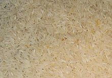

 Beras adalah bagian bulir padi (gabah) yang telah dipisah dari sekam. Sekam (Jawa merang) secara anatomi disebut 'palea' (bagian yang ditutupi) dan 'lemma' (bagian yang menutupi). Pada salah satu tahap pemrosesan hasil panen padi, gabah ditumbuk dengan lesung atau digiling sehingga bagian luarnya (kulit gabah) terlepas dari isinya. Bagian isi inilah, yang berwarna putih, kemerahan, ungu, atau bahkan hitam, yang disebut beras.